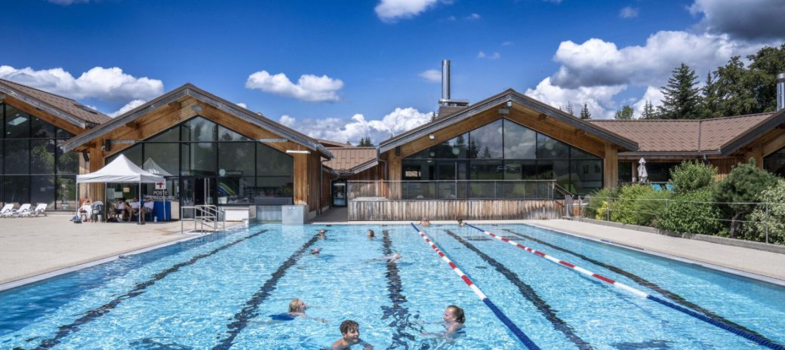
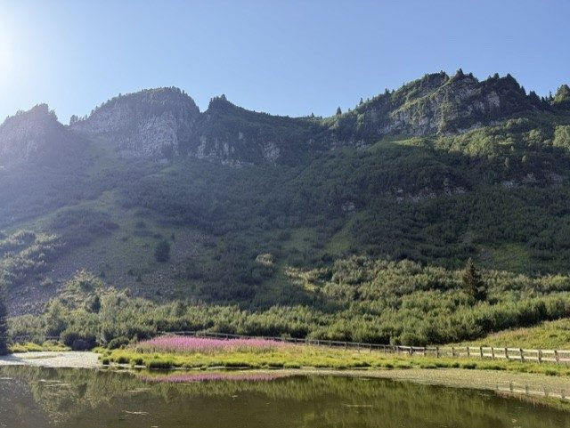
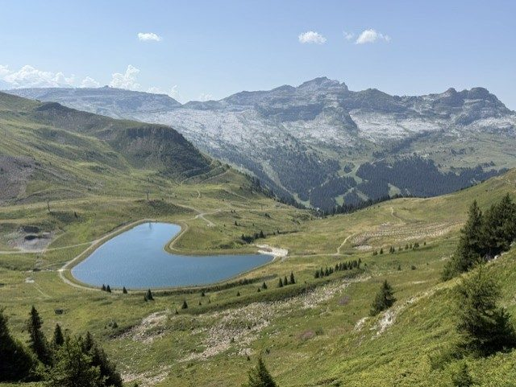
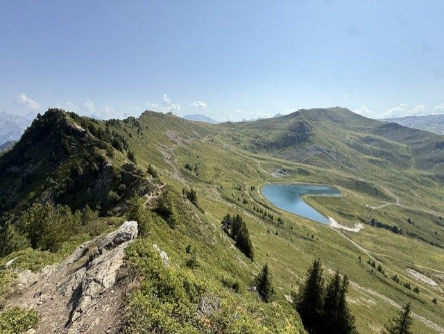

Se baigner près des Carroz d'Arâches : lacs et Aquacîme

À 1 140 m d'altitude, l'été aux Carroz d'Arâches reste doux et respirable. Mais quand le soleil de juillet et d'août tape sur la terrasse, rien ne vaut un plongeon. Bonne nouvelle : entre la piscine panoramique du village et deux bases de loisirs au bord de l'eau à moins de vingt minutes en voiture, les envies de baignade ne manquent pas autour du Lodge Le Chamois. Voici nos adresses préférées pour se rafraîchir au cœur du Grand Massif.



Aquacîme, la piscine panoramique des Carroz
Impossible de commencer ailleurs : Aquacîme se trouve directement aux Carroz, à quelques minutes du Lodge. Ce centre aquatique niché à 1 140 m propose des bassins extérieurs chauffés ouverts face aux sommets — on nage en gardant les yeux sur la montagne. Toboggan, pataugeoire et jeux d'eau font le bonheur des enfants, tandis que l'espace bien-être (sauna, hammam, grotte de sel et solarium) attend les parents après une journée de randonnée ou de VTT. C'est l'option idéale les jours de météo incertaine, puisque l'établissement fonctionne été comme hiver.
Le lac Bleu de Morillon, la base de loisirs familiale
À une quinzaine de minutes en descendant dans la vallée, le lac Bleu de Morillon est le rendez-vous estival des familles. À seulement 500 m du centre du village et desservi par des parkings gratuits, il aligne une plage de sable et des pelouses ombragées, avec une zone de baignade surveillée par des maîtres-nageurs. Les activités s'enchaînent au bord de l'eau : accrobranche, aire de jeux, structures gonflables sur le lac (Le Splash), pumptrack, terrains de beach-volley, kayak et paddle, sans oublier le bar-restaurant et les aires de pique-nique. Les amateurs de pêche y taquinent même la truite. De quoi occuper toute une journée sans jamais s'ennuyer.
Les lacs aux Dames de Samoëns
Un peu plus loin dans la vallée du Giffre, la base de loisirs des lacs aux Dames de Samoëns s'étend sur une dizaine d'hectares autour de deux plans d'eau, à deux pas du village. L'entrée est gratuite, et la baignade dans le lac est ouverte et surveillée du 6 juillet au 1er septembre, de 12 h à 18 h. Le site fourmille d'activités : grande aire de jeux pour les plus jeunes, terrains de foot et de basket, tennis, accrobranche, piscine de plein air (trois bassins et toboggan), parapente, pétanque, deux bars-restaurants et un vaste parking gratuit. C'est aussi un joli point de départ pour une balade familiale le long du Giffre, jusqu'au lac Bleu de Morillon.
Se rafraîchir sans quitter le Lodge
Pour les jours où l'on préfère rester à la maison, le bain nordique en bois de la terrasse plein sud se transforme volontiers en bain frais l'été : un plongeon revigorant face aux sapins, avant l'apéro au brasero. Nos plus belles randonnées mènent aussi à des lacs d'altitude comme le lac de l'Airon, parfaits pour se rafraîchir en chemin. Et pour tout organiser, notre guide complet des Carroz d'Arâches réunit nos meilleures idées de sorties.
Envie de séjourner au Lodge ?
Appartement 4★ pour 6 personnes, terrasse plein sud et bain nordique, au centre des Carroz d'Arâches.
Voir les disponibilités